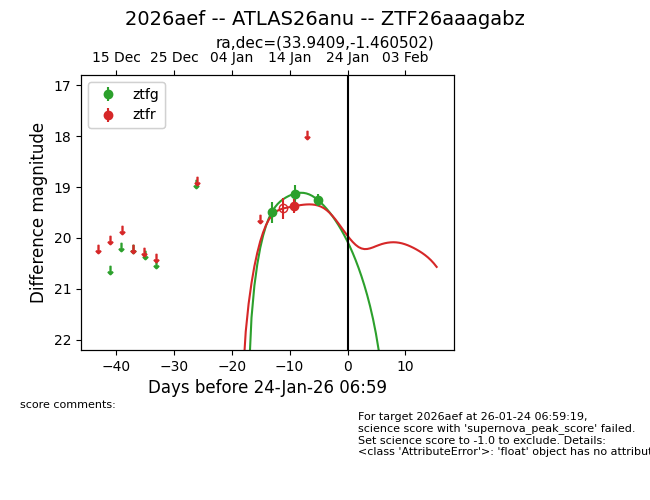
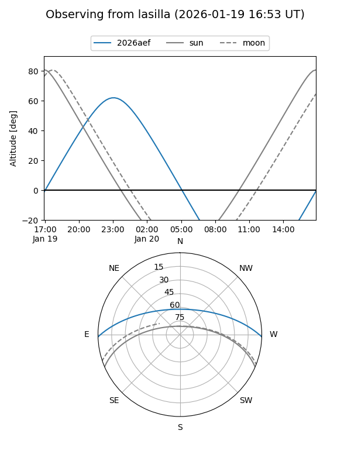
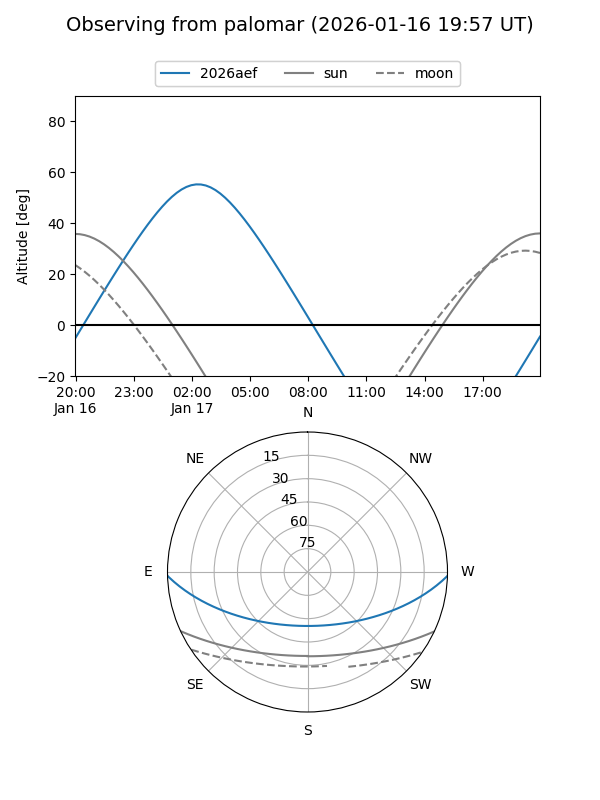
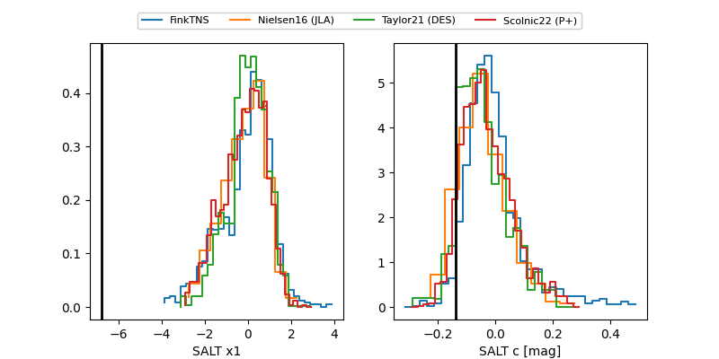

2026aef
Target 2026aef at 2026-01-25 19:21
Aliases and brokers:
FINK: link
Lasair: link
ALeRCE: link
TNS: link
YSE: link
alt names
ZTF26aaagabz (ztf,fink_ztf)
2026aef (tns,yse)
ATLAS26anu (atlas)
Coordinates:
equatorial (ra, dec) = 33.9409,-1.46050
equatorial (HMS+DMS) = 02:15:45.82,-01:27:37.81
galactic (l, b) = (164.6982,-57.32788)
Flags:
Photometry:
last ztfg=19.26, ztfr=19.38
3 ztfg, 1 ztfr detections
Lightcurve

Visibility


Additional plots
